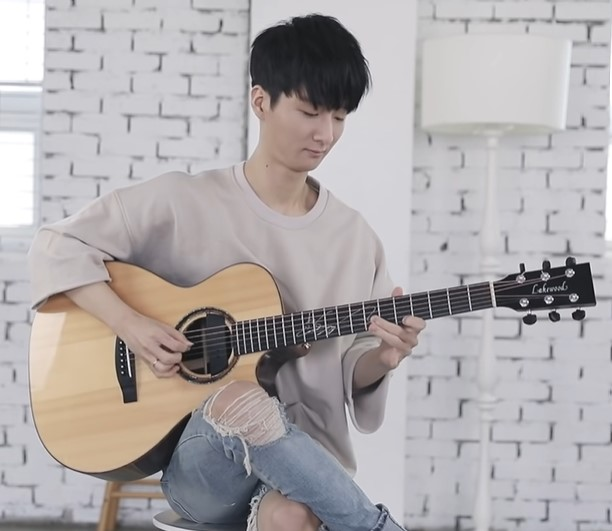
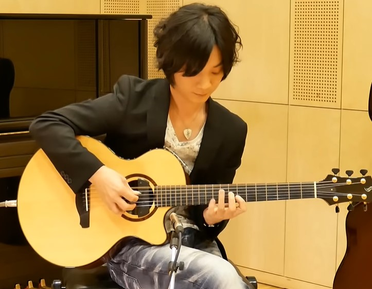

演奏家類別
-

韓式指彈
韓系指彈多以輕快的律動，搭配細緻的編曲，時而Neo-Soul，時而藍調，編曲層次十分多樣，使得聽感呈現上處處充滿驚喜！
代表演奏家：
1. Sungha Jung
2. Zairo
3. Kim Youngso -

日式指彈
日系指彈分為兩大派別。一為節奏技巧派，運用特殊的打板技巧，使得整首曲子聽感澎湃！ 另一則為旋律派，靠著溫柔的觸弦使曲子聽來溫暖而動聽！
代表演奏家：
1. 押尾光太郎
2. 松井祐貴
3. 岸部真明 -
美式指彈
美式指彈多運用大量的吉鼓技巧，利用吉他箱體發出大、小鼓、Hi-Hat的聲音，且運用許多浮誇的技巧，十分吸人目光，故美式指彈也稱"視覺系指彈"！
代表演奏家：
1. Andy Mckee
2. Luca Stricagnoli
3. Alexandr Misko